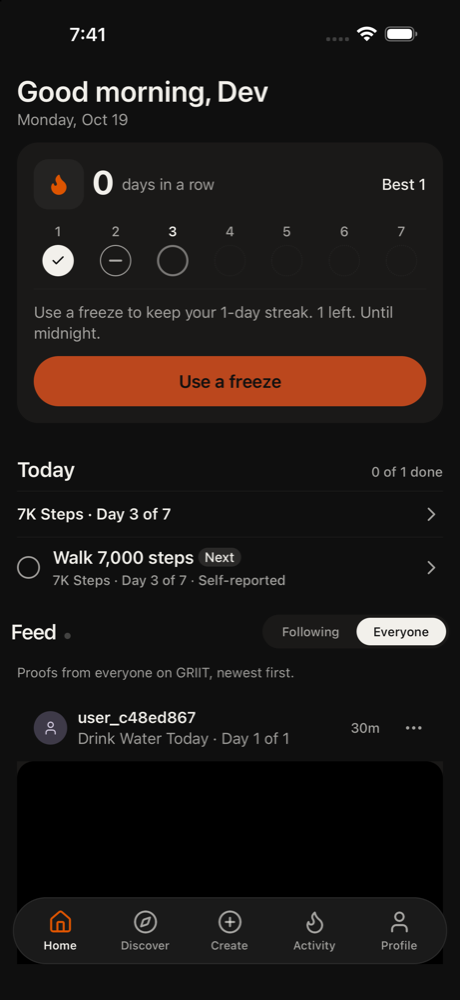
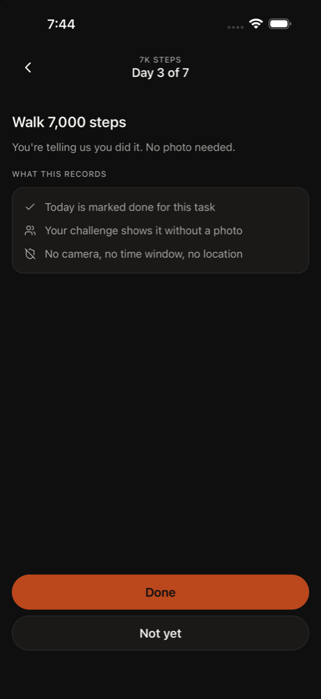
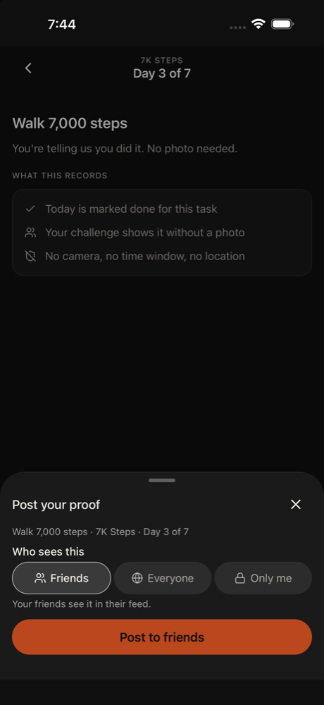
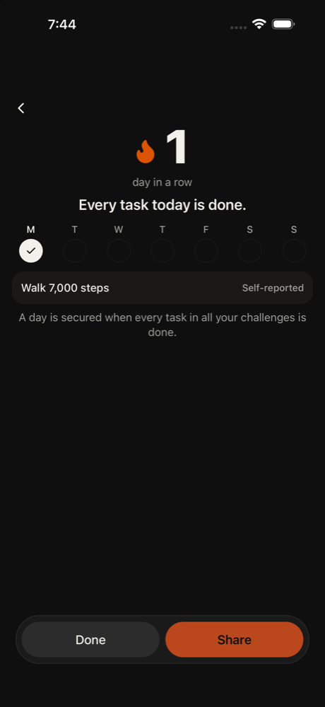
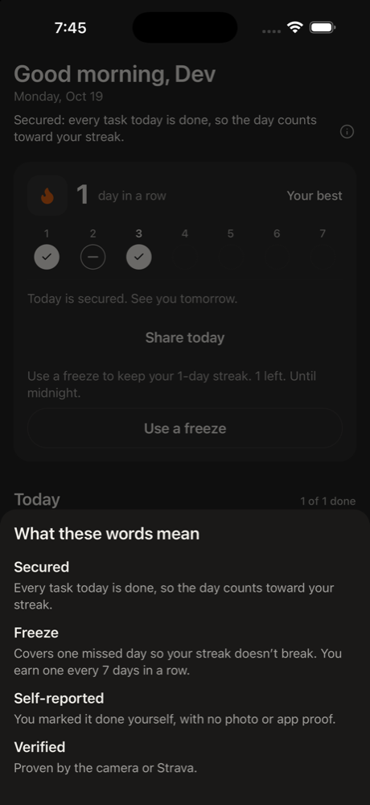
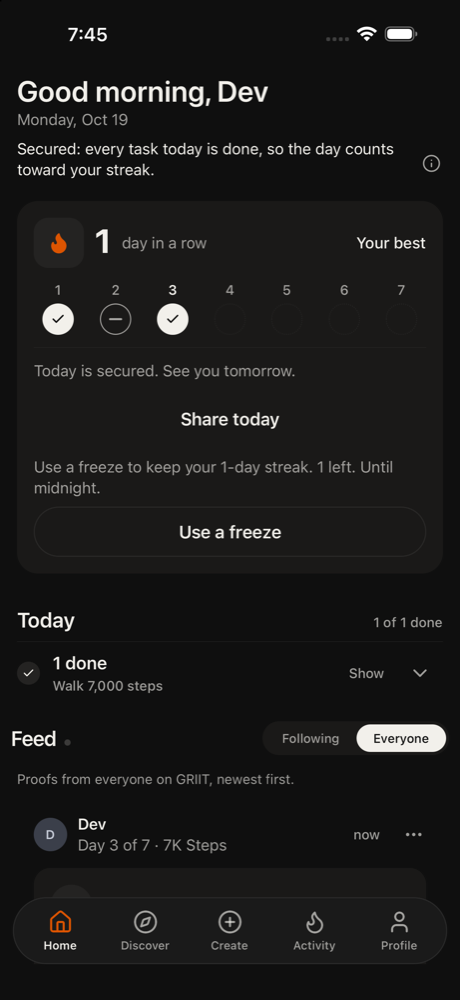
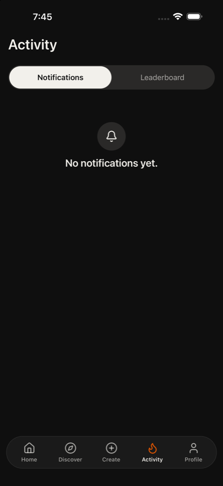
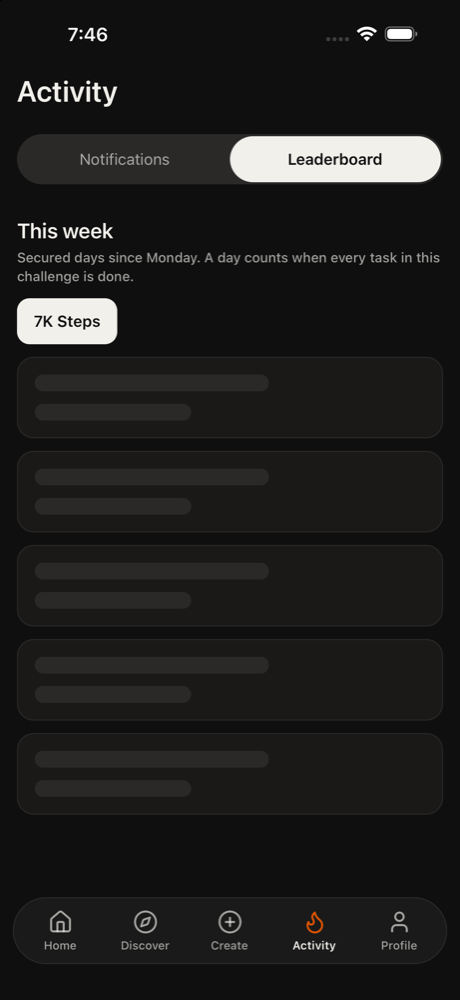

All agents
Tess
Returning user (1-speed/p1-01), last secured 2026-10-17.
Started a streak and is checking in again. Tech med, patience 3, phone small, text default, curious, English native.
Funnel stage: shared. Stages: opened → home → discover → joined → completed → shared. Steps 17. 317s. is_test true. Agent stopped on their own.
GRIIT iPhone 16. Persona phone size was recorded and not applied, because this is the simulator that has the app installed. Text size applied: large. Cleanup: kept
Goals
- Pass · observed · You joined a challenge in GRIIT on an earlier day and finished that day. Today you open the app again. Do whatever you think you need to do today, and look at your streak. Say in your thought what the app tells you about yesterday.
seen on screen
Issues
- Check off doesn't seem to have registered; 'Nothing done today. 1 task left.' is unchanged.
- Check off keeps failing and nothing on this page mentions yesterday.
- Day 3 of 7 but only 1 of 2 days secured, and it's unclear what happened to yesterday here.
- empty model reply
- Failed to run flow: Device became unreachable during viewHierarchy
- home: the same screen came up 3 times
- Streak says 0 but also offers to keep my 1-day streak with a freeze - unclear if it's already broken.
- Streak says 1 day in a row, but day 2 shows a dash and 'Use a freeze to keep your 1-day streak' appears even though today is secured.
Timeline

1. home scroll 50%,60%
The streak shows 0 days in a row, Best 1. Day 1 is checked, day 2 shows a dash, so I seem to have missed yesterday (Oct 18). The app says 'Use a freeze to keep your 1-day streak. 1 left. Until midnight.' Let me look around before acting.
Confusion: Streak says 0 but also offers to keep my 1-day streak with a freeze - unclear if it's already broken.
neutral · 18127ms

2. home tap Open 7K Steps challenge
The app says my streak is 0 and shows a dash for yesterday (Oct 18), so I missed it. It offers a freeze to keep the 1-day streak until midnight. I'm going to look at today's challenge first before deciding on the freeze.
neutral · 14933ms

3. home tap Got it
This challenge page says Day 3 of 7 with 1 day secured and nothing done today. Yesterday isn't clearly shown here, but the Home screen said I missed Oct 18 and offered a freeze. I'll dismiss the dot legend first so I can see the rest of the page.
Confusion: Day 3 of 7 but only 1 of 2 days secured, and it's unclear what happened to yesterday here.
neutral · 6915ms

4. home tap Check off
Today's task is Walk 7,000 steps, self-reported. The page says Day 3 of 7 with 1 day secured and nothing done today. Yesterday isn't spelled out here, but Home said I missed Oct 18. I'll check off today's task and see what happens to the streak.
Error: Failed to run flow: Device became unreachable during viewHierarchy
neutral · 45675ms

5. home none
Error: empty model reply
frustrated · 12028ms

6. home scroll 50%,60%
The screen hasn't changed for a few steps, so I'll scroll down to see the rest of the page. The task still looks unchecked. The challenge page only shows 1 of 2 days secured and doesn't spell out yesterday, though Home said I missed Oct 18.
Confusion: Check off doesn't seem to have registered; 'Nothing done today. 1 task left.' is unchanged.
neutral · 7033ms

7. home tap Check off
Still on the 7K Steps page with today's task unchecked. My earlier check-off attempt errored out, so I'll try it again. So far the app says my streak is 0 and Oct 18 shows a dash, so I missed yesterday. It offers a freeze to keep the 1-day streak.
Confusion: The page says '1 of 2 days secured' but Day 3 of 7, and yesterday isn't shown clearly.
Error: Failed to run flow: Device became unreachable during viewHierarchy
neutral · 44458ms

8. home tap Start today’s task
Check off has errored twice, so I'll try the big Start today's task button instead. I've used 7 of 15 actions. The app told me my streak is 0 and Oct 18 (yesterday) shows a dash, so I missed it, and it offered a freeze.
Confusion: Check off keeps failing and nothing on this page mentions yesterday.
neutral · 14784ms

9. home tap Done
This is the self-report confirmation screen for Walk 7,000 steps. It says no photo is needed and that today gets marked done. I'll tap Done to secure today. So far the app has told me I missed yesterday (Oct 18) and that my streak is 0, and it offered a freeze.
neutral · 14404ms

10. home tap Post to friends
The Post your proof sheet is up with Friends selected. I'll post to friends to secure today. So far the app told me I missed yesterday (Oct 18), my streak shows 0, and it offered a freeze to keep the 1-day streak.
neutral · 18768ms

11. other tap Done
Today is secured and the streak shows 1 day in a row. Earlier the app told me yesterday (Oct 18) was missed, with a dash and a streak of 0, and it offered a freeze. Now it says 1 day in a row. I'll tap Done to go back Home and check the streak there.
satisfied · 8052ms

12. home tap What these words mean
Back on Home. Today is secured and the streak shows 1 day in a row. The week row shows Oct 18 (day 2) as a dash, so the app says I missed yesterday. It still offers a freeze to keep the 1-day streak. I'll open the info to see how the app explains streak and missed days.
Confusion: Streak says 1 day in a row, but day 2 shows a dash and 'Use a freeze to keep your 1-day streak' appears even though today is secured.
neutral · 14832ms

13. home tap Close
The glossary says Secured means every task today is done, and Freeze covers one missed day. That matches what I saw: yesterday (Oct 18) shows a dash, so the app says I missed it. Today is secured and the streak is 1. That's 13 actions used, so I'll close the sheet and keep lookin
neutral · 9994ms

14. home scroll Feed
I've used 13 actions and need at least 15. Back on Home, the app shows today as secured and a 1-day streak. The week row shows yesterday (Oct 18) as a dash, so the app is telling me I missed yesterday, and it still offers a freeze. I'll scroll down to see the feed and the rest of
Confusion: The streak says 1 day in a row, but yesterday shows a dash and it still offers a freeze for a 1-day streak. That is unclear.
neutral · 19267ms

15. home tap Activity
That's 14 actions so far and I need one more. Home shows today secured with a 1-day streak, and yesterday (Oct 18) is a dash, so the app is telling me I missed yesterday. I'll check Activity to see if it says anything more about it.
neutral · 13292ms

16. discover tap Leaderboard
Activity shows no notifications, so nothing more about yesterday here. That's 15 actions so far. The app has told me yesterday (Oct 18) was missed, with a dash, and offered a freeze, and my streak is now 1. I'll check the Leaderboard to keep exploring.
neutral · 6511ms

17. discover done
That's 16 actions, past the 15 minimum. The leaderboard shows 'Zero days of the week have ended', so nothing is counted yet this week, and ranks are anonymous user names. The app told me yesterday (Oct 18) was missed, shown as a dash with a streak of 0 and a freeze offer. After s
satisfied · 5531ms